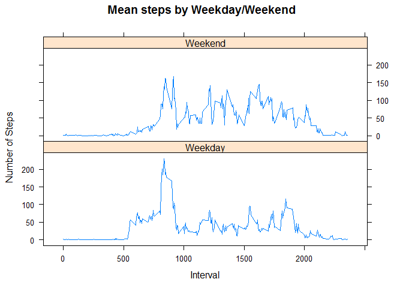

It is now possible to collect a large amount of data about personal movement using activity monitoring devices such as a Fitbit, Nike Fuelband, or Jawbone Up. These type of devices are part of the “quantified self” movement - a group of enthusiasts who take measurements about themselves regularly to improve their health, to find patterns in their behavior, or because they are tech geeks. But these data remain under-utilized both because the raw data are hard to obtain and there is a lack of statistical methods and software for processing and interpreting the data.
This assignment makes use of data from a personal activity monitoring device. This device collects data at 5 minute intervals through out the day. The data consists of two months of data from an anonymous individual collected during the months of October and November, 2012 and include the number of steps taken in 5 minute intervals each day.
The variables included in this dataset are:
steps: Number of steps taking in a 5-minute interval (missing values are coded as NA)
date: The date on which the measurement was taken in YYYY-MM-DD format
interval: Identifier for the 5-minute interval in which measurement was taken
The dataset is stored in a comma-separated-value (CSV) file and there are a total of 17,568 observations in this dataset.
##Download the dataset and save to a dataframe called 'd'
link <- "https://d396qusza40orc.cloudfront.net/repdata%2Fdata%2Factivity.zip"
file <- download.file(link, destfile="test.zip")
d <- read.csv(unz("test.zip", "activity.csv"))
##Convert the date column in to a date object
d$date <- as.Date(d$date)
##Check number of variables and cases as well as summary statistics
library(psych)
dim(d)## [1] 17568 3describeBy(d)## vars n mean sd median trimmed mad min max range
## steps 1 15264 37.38 112.00 0.0 8.0 0.00 0 806 806
## date* 2 17568 NaN NA NA NaN NA Inf -Inf -Inf
## interval 3 17568 1177.50 692.45 1177.5 1177.5 889.56 0 2355 2355
## skew kurtosis se
## steps 4.17 18.43 0.91
## date* NA NA NA
## interval 0.00 -1.20 5.22library(dplyr)##
## Attaching package: 'dplyr'
##
## The following objects are masked from 'package:stats':
##
## filter, lag
##
## The following objects are masked from 'package:base':
##
## intersect, setdiff, setequal, uniond.group <- group_by(d, date)
dsteps <- data.frame(summarize(d.group, totalsteps = sum(steps, na.rm=TRUE)))library(ggplot2)##
## Attaching package: 'ggplot2'
##
## The following object is masked from 'package:psych':
##
## %+%g <- ggplot(dsteps, aes(x=date, y=totalsteps)) + labs(title="Total Steps Per Day (Exclude Missing Values)", xlab="Total Steps Per Day", ylab="Date") + geom_histogram(stat="identity", fill=' light blue', colour='black')
print(g)Means steps are in the column ‘meansteps’ and median in the column ‘mediansteps’.
# Create dataset that calcualtes the mean, median and total steps per day
library(dplyr)
d.group <- group_by(d, date)
dsteps2 <- data.frame(summarize(d.group,
meansteps = mean(steps, na.rm=TRUE),
mediansteps = median(steps, na.rm=TRUE),
totalsteps = sum(steps, na.rm=TRUE)
))
print(dsteps2)## date meansteps mediansteps totalsteps
## 1 2012-10-01 NaN NA 0
## 2 2012-10-02 0.4375000 0 126
## 3 2012-10-03 39.4166667 0 11352
## 4 2012-10-04 42.0694444 0 12116
## 5 2012-10-05 46.1597222 0 13294
## 6 2012-10-06 53.5416667 0 15420
## 7 2012-10-07 38.2465278 0 11015
## 8 2012-10-08 NaN NA 0
## 9 2012-10-09 44.4826389 0 12811
## 10 2012-10-10 34.3750000 0 9900
## 11 2012-10-11 35.7777778 0 10304
## 12 2012-10-12 60.3541667 0 17382
## 13 2012-10-13 43.1458333 0 12426
## 14 2012-10-14 52.4236111 0 15098
## 15 2012-10-15 35.2048611 0 10139
## 16 2012-10-16 52.3750000 0 15084
## 17 2012-10-17 46.7083333 0 13452
## 18 2012-10-18 34.9166667 0 10056
## 19 2012-10-19 41.0729167 0 11829
## 20 2012-10-20 36.0937500 0 10395
## 21 2012-10-21 30.6284722 0 8821
## 22 2012-10-22 46.7361111 0 13460
## 23 2012-10-23 30.9652778 0 8918
## 24 2012-10-24 29.0104167 0 8355
## 25 2012-10-25 8.6527778 0 2492
## 26 2012-10-26 23.5347222 0 6778
## 27 2012-10-27 35.1354167 0 10119
## 28 2012-10-28 39.7847222 0 11458
## 29 2012-10-29 17.4236111 0 5018
## 30 2012-10-30 34.0937500 0 9819
## 31 2012-10-31 53.5208333 0 15414
## 32 2012-11-01 NaN NA 0
## 33 2012-11-02 36.8055556 0 10600
## 34 2012-11-03 36.7048611 0 10571
## 35 2012-11-04 NaN NA 0
## 36 2012-11-05 36.2465278 0 10439
## 37 2012-11-06 28.9375000 0 8334
## 38 2012-11-07 44.7326389 0 12883
## 39 2012-11-08 11.1770833 0 3219
## 40 2012-11-09 NaN NA 0
## 41 2012-11-10 NaN NA 0
## 42 2012-11-11 43.7777778 0 12608
## 43 2012-11-12 37.3784722 0 10765
## 44 2012-11-13 25.4722222 0 7336
## 45 2012-11-14 NaN NA 0
## 46 2012-11-15 0.1423611 0 41
## 47 2012-11-16 18.8923611 0 5441
## 48 2012-11-17 49.7881944 0 14339
## 49 2012-11-18 52.4652778 0 15110
## 50 2012-11-19 30.6979167 0 8841
## 51 2012-11-20 15.5277778 0 4472
## 52 2012-11-21 44.3993056 0 12787
## 53 2012-11-22 70.9270833 0 20427
## 54 2012-11-23 73.5902778 0 21194
## 55 2012-11-24 50.2708333 0 14478
## 56 2012-11-25 41.0902778 0 11834
## 57 2012-11-26 38.7569444 0 11162
## 58 2012-11-27 47.3819444 0 13646
## 59 2012-11-28 35.3576389 0 10183
## 60 2012-11-29 24.4687500 0 7047
## 61 2012-11-30 NaN NA 0From the above we note that While the mean can vary from 0 to 73.5902778, the median steps appear to be 0.
From the chart, the interval with the max means steps is 835.
# Group average steps by intervals
library(dplyr)
di.group <- group_by(d, interval)
dsteps3 <- data.frame(summarize(di.group,
meansteps = mean(steps, na.rm=TRUE)
))
# Interval with the Max Mean Steps
maxsteps <- dsteps3[dsteps3$meansteps==max(dsteps3$meansteps),1]
# Plot time-series
with(dsteps3, plot(x=interval, y=meansteps, type="l", main="Mean Steps by Interval", xlab="5 Minute Interval", ylab="Mean Steps"))
abline(v=maxsteps, lwd=3, col="red")
text(1800, 200, paste("Interval with Max Mean Steps = ", maxsteps), cex=0.75)From the code below we note there 2304 missing cases in total.
# Total cases with missing data
sum(!complete.cases(d))## [1] 2304We will impute based on intervals since it is likely that the number of steps would be similar average based on intervals. Moreover, as some of the days had a large number of missing values, using the daily mean may still yield missing values or unrealistically low step counts.
From the comparison of the histograms below, we note that some of the days which had no lor low total steps now have higher number of steps.
# Impute missing values based on interval mean. This is done with a for loop.
d.new <- d
for (i in unique(d$interval)) {
d.new <- transform(d.new, steps = ifelse(is.na(steps) & interval==i,
dsteps3$meansteps[dsteps3$interval==i], steps ))
}
# Create data frame that calculates the mean, median and total steps per day
d.new.group <- group_by(d.new, date)
dsteps4 <- data.frame(summarize(d.new.group,
meansteps = mean(steps, na.rm=TRUE),
mediansteps = median(steps, na.rm=TRUE),
totalsteps = sum(steps, na.rm=TRUE)
))
# Create histogram with the new data set with imputed interval mean
library(ggplot2)
library(gridExtra)
g2 <- ggplot(dsteps4, aes(x=date, y=totalsteps)) + labs(title="Total Steps Per Day (With Imputed Values)", xlab="Total Steps Per Day", ylab="Date") + geom_histogram(stat="identity", fill=' light blue', colour='black')
# Arrange the original total steps histogram which had missing values with
# the histogram with imputed interval mean
grid.arrange(g2, g, ncol=2, name="Comparison of Histograms")Looking at the data based on the table below, there were 8 days where the total steps which was originally missing but now have 10766.19 steps.
options(width = 10000)
#Create combine table of original mean/median/total steps data by date with the new
#imputed mean/median/total steps by date for comparison
d.combine <- cbind(dsteps2, dsteps4[2:4])
names(d.combine) <- c("date", "meansteps", "mediansteps", "totalsteps",
"imputed_meansteps", "imputed_mediansteps", "imputed_totalsteps")
#Add a column to check for difference between the new imputed data with the pre-imputed data
d.combine$Diff_totalsteps <- d.combine$imputed_totalsteps - d.combine$totalsteps
print(d.combine)## date meansteps mediansteps totalsteps imputed_meansteps imputed_mediansteps imputed_totalsteps Diff_totalsteps
## 1 2012-10-01 NaN NA 0 37.3825996 34.11321 10766.19 10766.19
## 2 2012-10-02 0.4375000 0 126 0.4375000 0.00000 126.00 0.00
## 3 2012-10-03 39.4166667 0 11352 39.4166667 0.00000 11352.00 0.00
## 4 2012-10-04 42.0694444 0 12116 42.0694444 0.00000 12116.00 0.00
## 5 2012-10-05 46.1597222 0 13294 46.1597222 0.00000 13294.00 0.00
## 6 2012-10-06 53.5416667 0 15420 53.5416667 0.00000 15420.00 0.00
## 7 2012-10-07 38.2465278 0 11015 38.2465278 0.00000 11015.00 0.00
## 8 2012-10-08 NaN NA 0 37.3825996 34.11321 10766.19 10766.19
## 9 2012-10-09 44.4826389 0 12811 44.4826389 0.00000 12811.00 0.00
## 10 2012-10-10 34.3750000 0 9900 34.3750000 0.00000 9900.00 0.00
## 11 2012-10-11 35.7777778 0 10304 35.7777778 0.00000 10304.00 0.00
## 12 2012-10-12 60.3541667 0 17382 60.3541667 0.00000 17382.00 0.00
## 13 2012-10-13 43.1458333 0 12426 43.1458333 0.00000 12426.00 0.00
## 14 2012-10-14 52.4236111 0 15098 52.4236111 0.00000 15098.00 0.00
## 15 2012-10-15 35.2048611 0 10139 35.2048611 0.00000 10139.00 0.00
## 16 2012-10-16 52.3750000 0 15084 52.3750000 0.00000 15084.00 0.00
## 17 2012-10-17 46.7083333 0 13452 46.7083333 0.00000 13452.00 0.00
## 18 2012-10-18 34.9166667 0 10056 34.9166667 0.00000 10056.00 0.00
## 19 2012-10-19 41.0729167 0 11829 41.0729167 0.00000 11829.00 0.00
## 20 2012-10-20 36.0937500 0 10395 36.0937500 0.00000 10395.00 0.00
## 21 2012-10-21 30.6284722 0 8821 30.6284722 0.00000 8821.00 0.00
## 22 2012-10-22 46.7361111 0 13460 46.7361111 0.00000 13460.00 0.00
## 23 2012-10-23 30.9652778 0 8918 30.9652778 0.00000 8918.00 0.00
## 24 2012-10-24 29.0104167 0 8355 29.0104167 0.00000 8355.00 0.00
## 25 2012-10-25 8.6527778 0 2492 8.6527778 0.00000 2492.00 0.00
## 26 2012-10-26 23.5347222 0 6778 23.5347222 0.00000 6778.00 0.00
## 27 2012-10-27 35.1354167 0 10119 35.1354167 0.00000 10119.00 0.00
## 28 2012-10-28 39.7847222 0 11458 39.7847222 0.00000 11458.00 0.00
## 29 2012-10-29 17.4236111 0 5018 17.4236111 0.00000 5018.00 0.00
## 30 2012-10-30 34.0937500 0 9819 34.0937500 0.00000 9819.00 0.00
## 31 2012-10-31 53.5208333 0 15414 53.5208333 0.00000 15414.00 0.00
## 32 2012-11-01 NaN NA 0 37.3825996 34.11321 10766.19 10766.19
## 33 2012-11-02 36.8055556 0 10600 36.8055556 0.00000 10600.00 0.00
## 34 2012-11-03 36.7048611 0 10571 36.7048611 0.00000 10571.00 0.00
## 35 2012-11-04 NaN NA 0 37.3825996 34.11321 10766.19 10766.19
## 36 2012-11-05 36.2465278 0 10439 36.2465278 0.00000 10439.00 0.00
## 37 2012-11-06 28.9375000 0 8334 28.9375000 0.00000 8334.00 0.00
## 38 2012-11-07 44.7326389 0 12883 44.7326389 0.00000 12883.00 0.00
## 39 2012-11-08 11.1770833 0 3219 11.1770833 0.00000 3219.00 0.00
## 40 2012-11-09 NaN NA 0 37.3825996 34.11321 10766.19 10766.19
## 41 2012-11-10 NaN NA 0 37.3825996 34.11321 10766.19 10766.19
## 42 2012-11-11 43.7777778 0 12608 43.7777778 0.00000 12608.00 0.00
## 43 2012-11-12 37.3784722 0 10765 37.3784722 0.00000 10765.00 0.00
## 44 2012-11-13 25.4722222 0 7336 25.4722222 0.00000 7336.00 0.00
## 45 2012-11-14 NaN NA 0 37.3825996 34.11321 10766.19 10766.19
## 46 2012-11-15 0.1423611 0 41 0.1423611 0.00000 41.00 0.00
## 47 2012-11-16 18.8923611 0 5441 18.8923611 0.00000 5441.00 0.00
## 48 2012-11-17 49.7881944 0 14339 49.7881944 0.00000 14339.00 0.00
## 49 2012-11-18 52.4652778 0 15110 52.4652778 0.00000 15110.00 0.00
## 50 2012-11-19 30.6979167 0 8841 30.6979167 0.00000 8841.00 0.00
## 51 2012-11-20 15.5277778 0 4472 15.5277778 0.00000 4472.00 0.00
## 52 2012-11-21 44.3993056 0 12787 44.3993056 0.00000 12787.00 0.00
## 53 2012-11-22 70.9270833 0 20427 70.9270833 0.00000 20427.00 0.00
## 54 2012-11-23 73.5902778 0 21194 73.5902778 0.00000 21194.00 0.00
## 55 2012-11-24 50.2708333 0 14478 50.2708333 0.00000 14478.00 0.00
## 56 2012-11-25 41.0902778 0 11834 41.0902778 0.00000 11834.00 0.00
## 57 2012-11-26 38.7569444 0 11162 38.7569444 0.00000 11162.00 0.00
## 58 2012-11-27 47.3819444 0 13646 47.3819444 0.00000 13646.00 0.00
## 59 2012-11-28 35.3576389 0 10183 35.3576389 0.00000 10183.00 0.00
## 60 2012-11-29 24.4687500 0 7047 24.4687500 0.00000 7047.00 0.00
## 61 2012-11-30 NaN NA 0 37.3825996 34.11321 10766.19 10766.19These days were 2012-10-01, 2012-10-08, 2012-11-01, 2012-11-04, 2012-11-09, 2012-11-10, 2012-11-14, 2012-11-30. They also had correspondingly now actual values for mean and median steps (as opposed to missing).
Looking at the graph below, there appears to a distinct difference in activities for weekday compared to weekend whereby weekday sees a lot of steps from the interval 500-1000 where as for weekend the steps are relatively evenly spread throughout the day.
# Create new variable
d.new$day <- weekdays(d.new$date)
#Identifying which row are weekdays and weekends
weekday <- grepl("Monday|Tuesday|Wednesday|Thursday|Friday", d.new$day)
weekend <- grepl("Saturday|Sunday", d.new$day)
#Recoding data with a new column to identify Weekdays and Weekends
d.new$daytype[weekday] <- "Weekday"
d.new$daytype[weekend] <- "Weekend"
d.new.group2 <- group_by(d.new, interval , daytype)
dsteps5 <- data.frame(summarize(d.new.group2,
meansteps = mean(steps, na.rm=TRUE)
))
#Plot Mean Steps by Weekday and Weekend
library(lattice)
with(dsteps5, xyplot(meansteps~interval|daytype, type="l", layout=c(1,2), main="Mean steps by Weekday/Weekend", xlab="Interval", ylab="Number of Steps"))